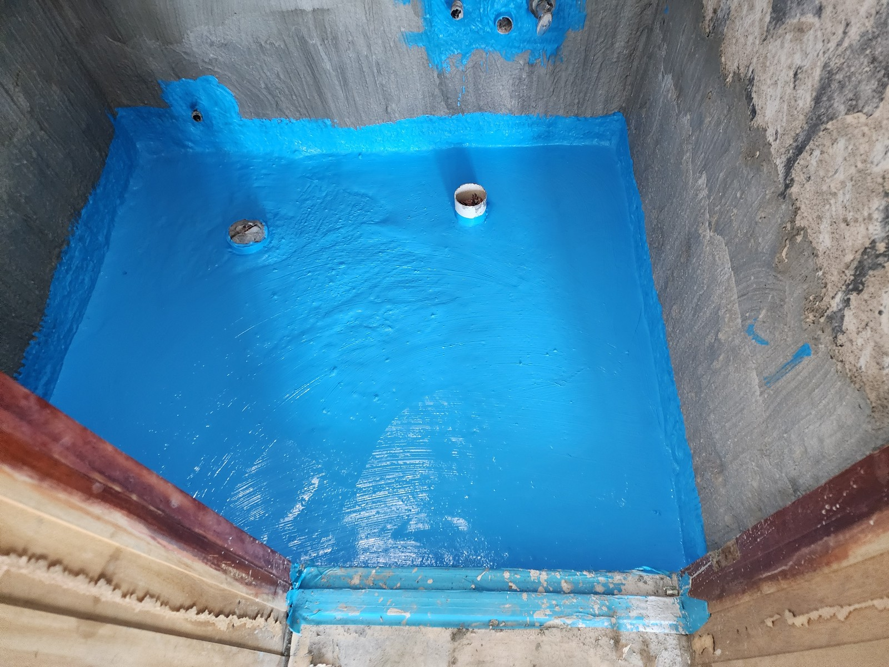
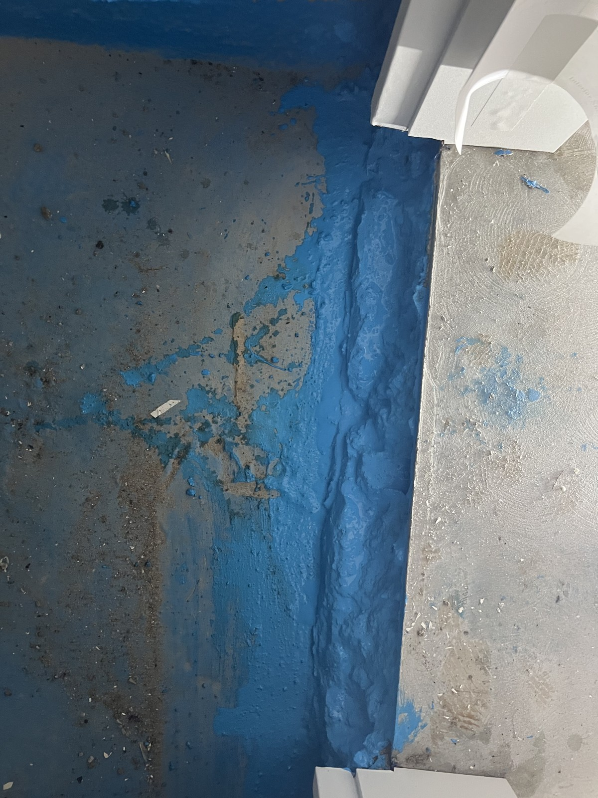

대전 금호한사랑아파트 도막 보수｜욕실 바닥과 출입구 경계 기록

현장 작업 한눈에 보기
- 현장
- 금호한사랑아파트 · 욕실과 출입구 경계
- 문제
- 도막 작업과 경계부 보수 기록
- 작업
- 욕실 바닥 도포
출입구 경계부 부분 도포 - 결과
- 서로 다른 날짜의 공정 사진 3장
같은 날의 연속 시공으로 단정하지 않음
금호한사랑아파트의 욕실 도막과 출입구 경계 보수 사진을 모았습니다. 욕실은 8월 23일, 경계부는 8월 28일 촬영된 기록이며 거실 확장부 미장과 구분해 소개합니다.
마감 전에 남긴 현장 이야기
안녕하세요. 만물인테리어입니다. 금호한사랑아파트에서는 거실 확장부 미장 외에도 도막 작업 사진을 남겼습니다.
이번 글은 욕실 바닥 사진 두 장과 출입구 경계부 사진 한 장입니다. 촬영일이 각각 8월 23일과 8월 28일이어서, 날짜와 작업 구간을 나누어 소개합니다.
1. 욕실 바닥과 배관이 나오는 자리
8월 23일 사진에는 푸른색으로 도포된 욕실 바닥과 배관이 올라오는 부분이 보입니다. 배관 주변과 벽 하단까지 함께 담아 도포 범위를 기록했습니다.
마감재가 붙기 전의 사진으로, 완성된 욕실과는 구분해 주세요.
2. 출입구 쪽에서 본 욕실 전체 범위
조금 더 넓게 촬영한 사진에서는 욕실 입구와 바닥의 관계를 볼 수 있습니다. 가까이 찍은 배관 주변 사진과 함께 보면 작업 위치를 이해하기 쉽습니다.
색이 보인다는 이유만으로 도막 두께나 방수 성능까지 판단할 수는 없습니다.

3. 별도로 남긴 출입구 경계 보수
8월 28일 사진에는 출입구를 따라 길게 도포된 보수 구간이 보입니다. 현장 기록의 문턱·도막 보수 항목에 연결된 사진입니다.
앞선 욕실 사진과 정확히 같은 출입구인지는 확인이 필요해, 같은 장소의 전후 사진으로 묶지는 않았습니다.

확인한 범위와 상담 안내
넓은 바닥면과 좁은 경계부는 사진에서도 따로 살펴볼 필요가 있습니다. 이번 기록은 도포 모습까지이며 제품, 도포 횟수, 양생·시험 결과는 별도 확인이 필요합니다.
만물인테리어 상담 010-2397-8629. 욕실 방수와 문턱·경계부 보수의 범위를 나누어 상담해 주세요.